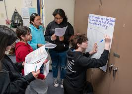
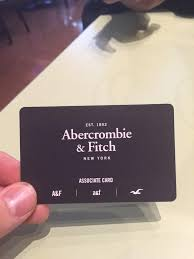
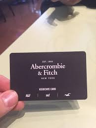
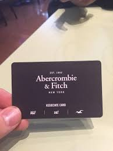
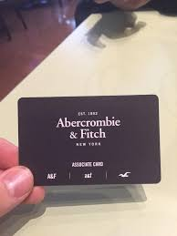

Portfolio

 


Business administration is the backbone of any organization, encompassing a myriad of responsibilities aimed at ensuring its smooth functioning and sustained growth. At its essence, business administration involves orchestrating the interplay of various facets within a company, from financial management to human resources, operations, and strategic planning. It's the art of balancing efficiency with effectiveness, navigating the complexities of the business landscape while steering the organization towards its objectives.
Business administrators are the architects of structure and order, meticulously managing resources, optimizing processes, and fostering a conducive environment for success. They are strategic thinkers, analyzing market trends, identifying opportunities, and devising plans to capitalize on them. With a keen eye on the bottom line, they oversee budgeting, financial reporting, and investment decisions, ensuring the company's financial health. Moreover, they are the custodians of talent, responsible for recruiting, nurturing, and empowering employees to unleash their full potential. From streamlining operations to supporting marketing initiatives, their impact reverberates across every department, driving efficiency, innovation, and ultimately, profitability.
In a world of constant change, business administrators are the linchpins of stability, adapting to evolving circumstances, and steering the organization towards sustainable growth. In essence, business administration is the art of orchestrating harmony amidst complexity, the linchpin that holds together the intricate machinery of modern enterprise, ensuring that it not only survives but thrives in an ever-evolving landscape of challenges and opportunities.
• Helped Customers find products
• Checked customer out at register
• Experinced with counting money and giving back change
•Learned Organization skills to better preapre me for class
• Organized events and fundrasiders for the program
• Participated in university field trips
• Collaborated in tutorial session to better my understanding on class context
